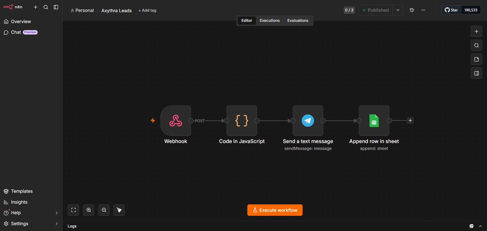
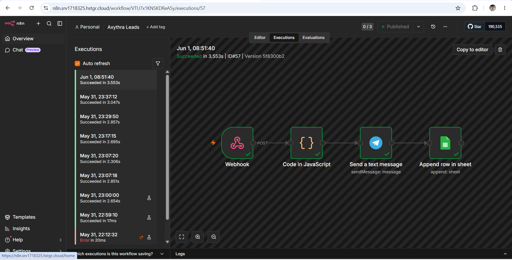

The Axythra Lead System is an automated lead capture setup that fires up your pipeline 24/7 — capturing, alerting, and logging every inquiry without ad spend. Simple to run, easy to own. Take the template yourself, or we'll build it for you.
You didn't start a business to babysit a contact form. But here you are — refreshing your inbox, copying details into spreadsheets, and forgetting to follow up because you're doing the actual work too. Every manual step is a delay. Every delay is a lead that books with someone else. It's not a hustle problem. It's a systems problem.
Inquiries at 2am sit unseen until morning, going cold before you even wake up.
The first to reply usually closes. Reply fast and your odds jump; reply manually and you're always second.
When every lead depends on you remembering, your growth is capped by your own hours.
The Axythra Lead System connects your website form to an automation that captures, alerts, and logs every inquiry the moment it lands — instantly and around the clock. It's not bloated software or another tool to learn. It's a quiet machine running in the background, turning every visitor who reaches out into a tracked lead you'll never lose.
Someone submits your website form (or an embedded Tally form). The system grabs it instantly via webhook.
→n8n cleans and structures the lead data automatically — no manual touch, no formatting.
→A real-time Telegram ping hits your phone the moment it happens. Reply while they're hot.
→The lead lands in your Google Sheet, timestamped and tracked forever — your always-updating lead database.
→People assume automation is complicated. It isn't. This is the entire system that captures, alerts, and logs every lead — laid out visually, end to end. If you can read a flowchart, you can understand exactly what's running for you 24/7.


Manual lead handling costs you the most expensive thing you have — your time. Ads cost you money every single day. The Axythra Lead System costs you neither: no ad spend to capture the leads already coming to you, and no hours lost to manual data entry. You set it up once, and it runs around the clock — catching, alerting, and logging — without asking for another dollar or another minute.
Every inquiry is caught the instant it arrives — day or night. No more leads lost in a crowded inbox or forgotten before you follow up.
Real-time alerts mean you can respond in minutes, not days — exactly when a prospect is most likely to book.
Names, emails, and messages flow straight into a clean, timestamped Google Sheet — your live lead database, built without lifting a finger.
The system handles 1 lead or 1,000 the same way. Grow your inbound flow without adding admin work or headcount.
This isn't a concept — it's the exact system running behind Axythra's own website. Every inquiry that lands gets captured, alerts the team instantly, and logs itself before a human touches it.
Tell us your bottleneck and we'll have your solution back to you within 24 hours. Take the template and run it yourself, or let us build the whole thing for you.
🔒 No obligation. First consultation is always free. We respond within 24 hours.